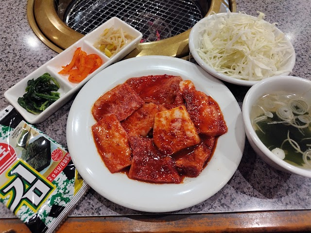
| 営業時間 | 火・水・木・金・土・日 11:00〜22:00 |
|---|---|
| 定休日 | 月曜 |
| 住所 | 神奈川県川崎市川崎区浜町４丁目１７−２４ |
| 予約 | 可 — ☎ 044-344-0672 ／ 公式サイト |
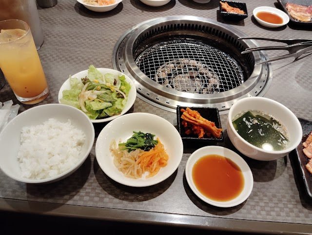
| 営業時間 | 月・火・木・金・土・日 11:00〜22:00 |
|---|---|
| 定休日 | 水曜 |
| 住所 | 神奈川県川崎市川崎区浜町４丁目１２−５ |
| 予約 | 可 — ☎ 044-355-1234 ／ 公式サイト |
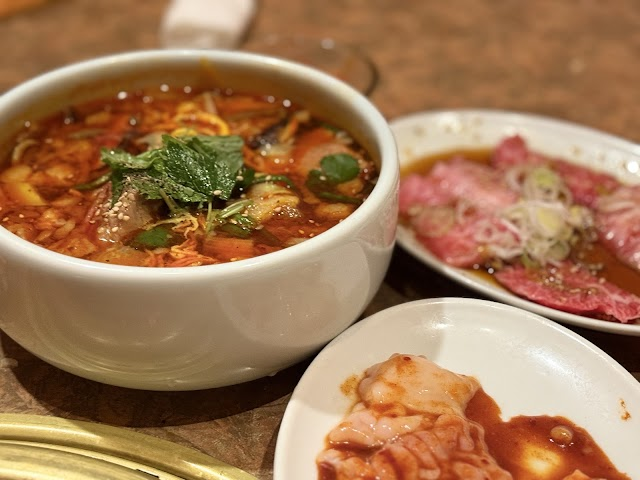
| 営業時間 | 月・火・水・木・金・土・日 11:00〜23:00 |
|---|---|
| 定休日 | なし(要最終確認) |
| 住所 | 神奈川県川崎市川崎区小川町５−１７ |
| 予約 | 可 — ☎ 044-222-4759 ／ 公式サイト |
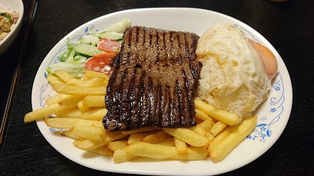
| 営業時間 | 月・火・木・金 15:00〜21:30 ／ 土・日 13:00〜21:30 |
|---|---|
| 定休日 | 水曜 |
| 住所 | 神奈川県川崎市川崎区桜本２丁目１８−１４ 山形ビル 1階 |
| 予約 | 可 — ☎ 044-288-3867 ／ 公式サイト |
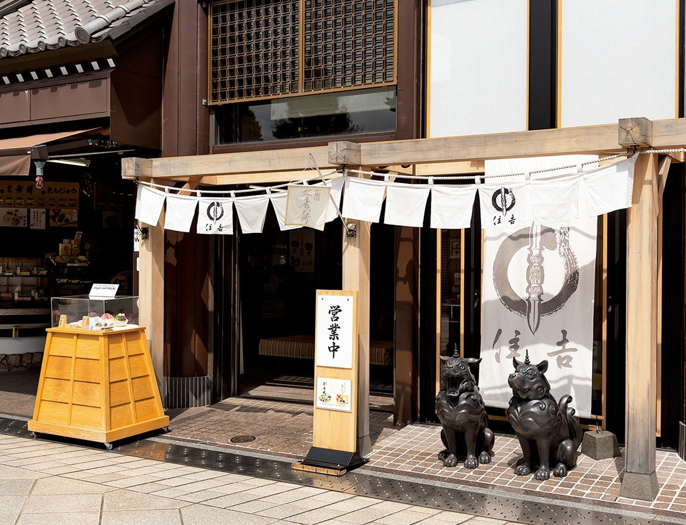
| 営業時間 | 月・火・水・木・金・土・日 8:30〜17:00 |
|---|---|
| 定休日 | なし(要最終確認) |
| 住所 | 神奈川県川崎市川崎区大師町４−４７ |
| 予約 | 要確認 — ☎ 044-288-4437 ／ 公式サイト |
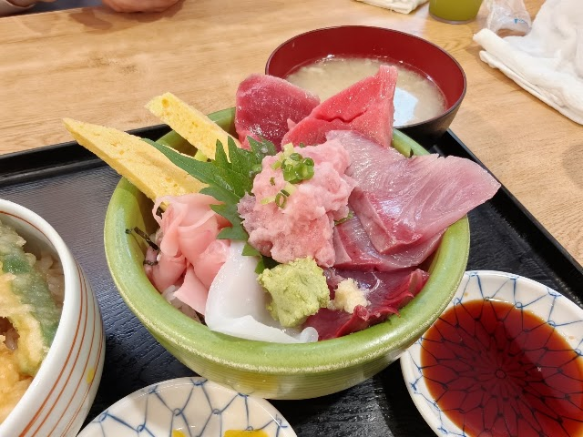
| 営業時間 | 月・火・木・金 9:30〜13:45 ／ 土 8:30〜13:45 |
|---|---|
| 定休日 | 水・日曜 |
| 住所 | 神奈川県川崎市宮前区水沢１丁目１−１ 食堂街 ３階 |
| 予約 | 可 — ☎ 044-975-2857 |
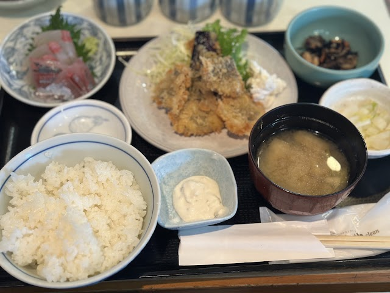
| 営業時間 | 月・火・木・金・土 7:00〜14:00 |
|---|---|
| 定休日 | 水・日曜 |
| 住所 | 神奈川県川崎市宮前区水沢１丁目１−１ |
| 予約 | 要確認 — ☎ 044-975-2859 |
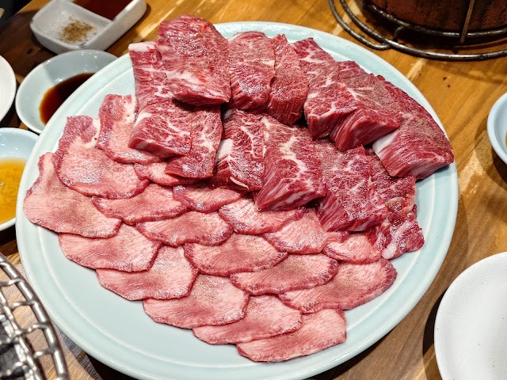
| 営業時間 | 火・水・木・金・土 17:00〜22:30 |
|---|---|
| 定休日 | 月・日曜 |
| 住所 | 神奈川県川崎市中原区新城１丁目１０−１４ |
| 予約 | 可 — 公式サイト |
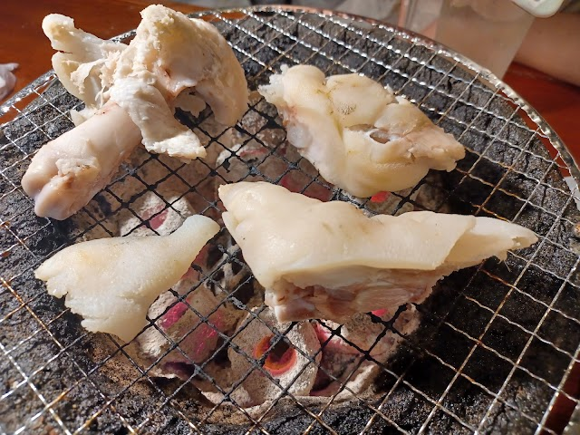
| 営業時間 | 月・火・水・木・金・土・日 17:00〜22:00 |
|---|---|
| 定休日 | なし(要最終確認) |
| 住所 | 神奈川県川崎市中原区新城中町８−２５ ハーモニー武蔵新城 1F |
| 予約 | 可 — ☎ 044-872-9295 ／ 公式サイト |
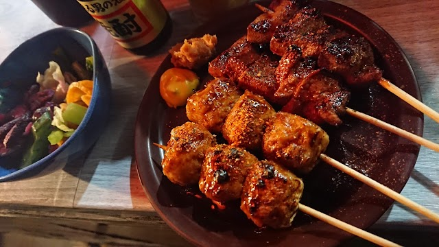
| 営業時間 | 月・火・水・木・金・土 16:00〜23:00 |
|---|---|
| 定休日 | 日曜 |
| 住所 | 神奈川県川崎市高津区溝口２丁目４−３ |
| 予約 | 可 — ☎ 044-811-4881 |
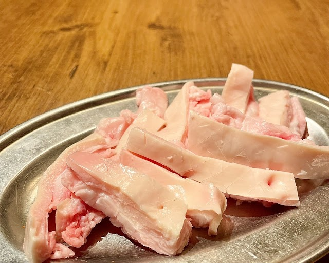
| 営業時間 | 月・火・水・木・金 11:30〜14:30, 17:30〜23:00 ／ 土 12:00〜23:00 ／ 日 12:00〜22:00 |
|---|---|
| 定休日 | なし(要最終確認) |
| 住所 | 神奈川県川崎市高津区溝口１丁目１５−８ 末永ビル 1階 |
| 予約 | 可 — ☎ 044-328-5772 ／ 公式サイト |
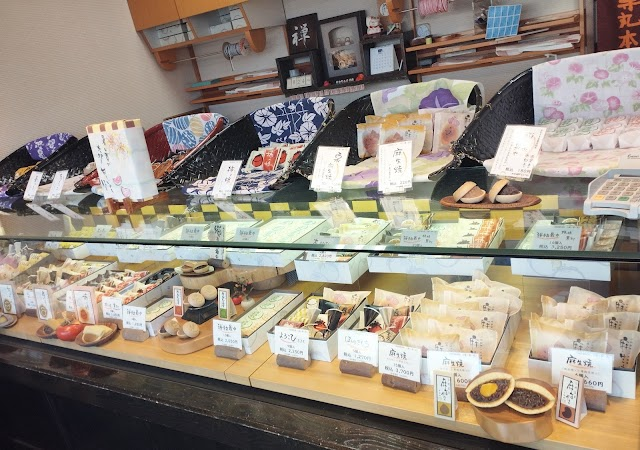
| 営業時間 | 月・火・水・木・金・土・日 9:00〜18:00 |
|---|---|
| 定休日 | なし(要最終確認) |
| 住所 | 神奈川県川崎市麻生区上麻生６丁目３９−３３ |
| 予約 | 要確認 — ☎ 044-989-2291 ／ 公式サイト |
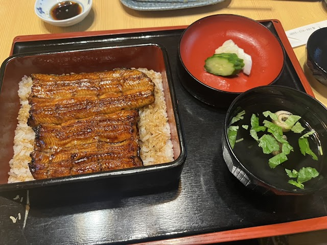
| 営業時間 | 月・水・木・金 11:00〜14:00, 17:00〜21:00 ／ 土・日 11:00〜14:30, 17:00〜21:00 |
|---|---|
| 定休日 | 火曜 |
| 住所 | 神奈川県川崎市高津区二子５丁目１５−１２ シェリール富美喜 |
| 予約 | 可 — ☎ 044-812-5399 ／ 公式サイト |
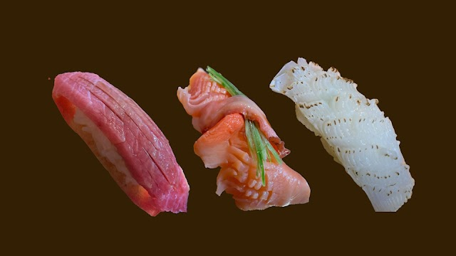
| 営業時間 | 火・水・木 17:00〜22:00 ／ 金・土・日 12:00〜14:00, 17:00〜22:00 |
|---|---|
| 定休日 | 月曜 |
| 住所 | 神奈川県川崎市高津区久本１丁目１６−１５ フィオーレの森 椿館 |
| 予約 | 可 — ☎ 070-3310-7506 ／ 公式サイト |
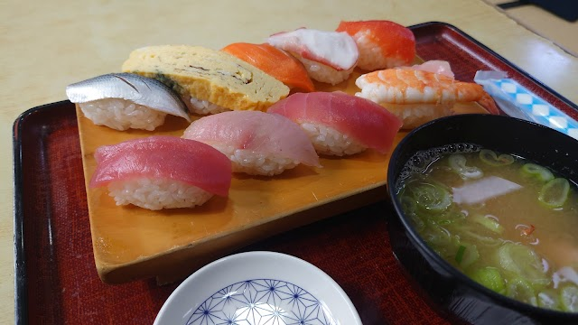
| 営業時間 | 火・水・木・金・土・日 11:30〜13:30, 17:00〜22:00 |
|---|---|
| 定休日 | 月曜 |
| 住所 | 神奈川県川崎市中原区今井南町２１−５７９ |
| 予約 | 可 — ☎ 044-722-1513 ／ 公式サイト |
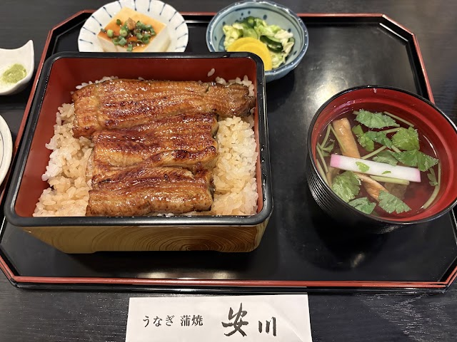
| 営業時間 | 月・火・金・土・日 11:00〜14:00, 17:00〜21:00 |
|---|---|
| 定休日 | 水・木曜 |
| 住所 | 神奈川県川崎市中原区新丸子町６４８−７ |
| 予約 | 可 — ☎ 044-733-5561 ／ 公式サイト |
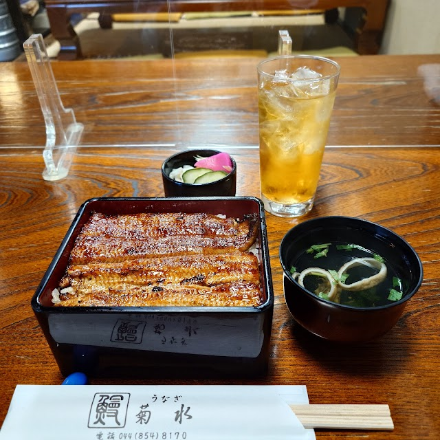
| 営業時間 | 月・木・金・土・日 11:30〜14:00, 17:00〜20:00 |
|---|---|
| 定休日 | 火・水曜 |
| 住所 | 神奈川県川崎市宮前区鷺沼４丁目２−３ 鷺沼大竹ハイツ |
| 予約 | 可 — ☎ 044-854-8170 |
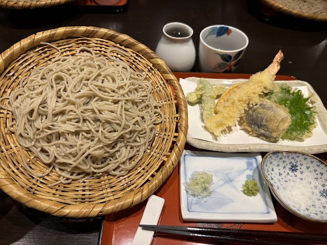
| 営業時間 | 水・木・金・土・日 11:30〜15:00, 17:00〜22:00 |
|---|---|
| 定休日 | 月・火曜 |
| 住所 | 神奈川県川崎市麻生区百合丘１丁目１−１１ 第三辰己プラザ 1階 |
| 予約 | 可 — ☎ 044-455-4808 |
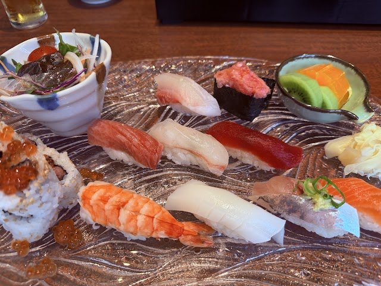
| 営業時間 | 月・火・水・木・金 11:30〜15:00, 17:00〜22:00 ／ 土 11:30〜22:00 ／ 日 11:30〜21:30 |
|---|---|
| 定休日 | なし(要最終確認) |
| 住所 | 神奈川県川崎市麻生区万福寺１丁目１５−１０ |
| 予約 | 可 — ☎ 044-951-3334 ／ 公式サイト |
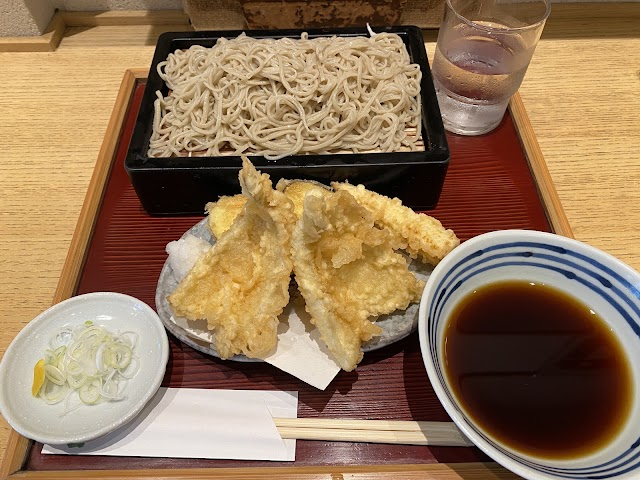
| 営業時間 | 火・水・木・金 11:30〜14:30, 17:30〜20:30 ／ 土 11:00〜14:30, 17:30〜20:30 ／ 日 11:00〜14:30 |
|---|---|
| 定休日 | 月曜 |
| 住所 | 神奈川県川崎市多摩区登戸１９１７−１ |
| 予約 | 可 — ☎ 044-911-2205 |
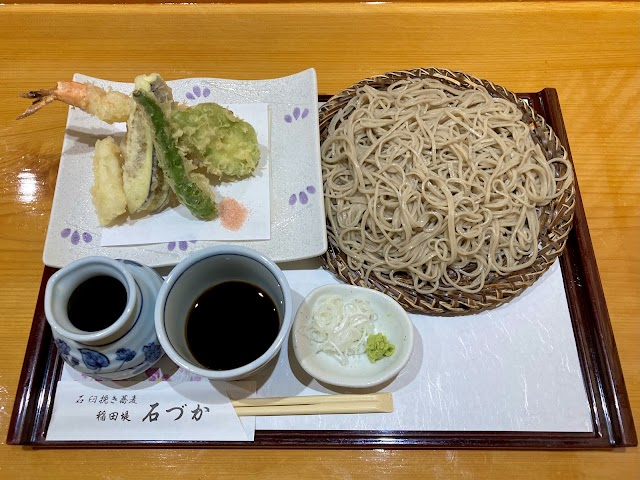
| 営業時間 | 水・木・金 11:00〜13:30 ／ 土・日 11:00〜13:30, 17:00〜19:00 |
|---|---|
| 定休日 | 月・火曜 |
| 住所 | 神奈川県川崎市多摩区菅北浦２丁目２２−１１ |
| 予約 | 可 — ☎ 044-944-4911 ／ 公式サイト |
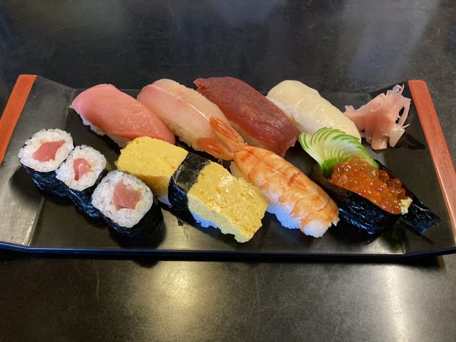
| 営業時間 | 火・水・木・金・土・日 12:00〜14:00, 17:00〜22:00 |
|---|---|
| 定休日 | 月曜 |
| 住所 | 神奈川県川崎市多摩区登戸３２３１ |
| 予約 | 可 — ☎ 044-911-5669 ／ 公式サイト |
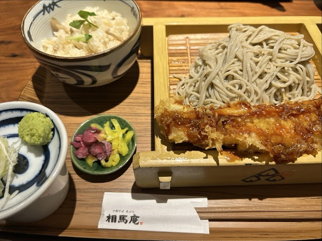
| 営業時間 | 月・火・水・木 11:30〜14:00, 17:00〜21:15 ／ 金 11:30〜14:00, 17:00〜21:45 ／ 土 11:30〜21:15 ／ 日 11:30〜20:45 |
|---|---|
| 定休日 | なし(要最終確認) |
| 住所 | 神奈川県川崎市幸区中幸町４丁目51−６ 福島ビル 1F |
| 予約 | 可 — ☎ 050-5447-8020 ／ 公式サイト |
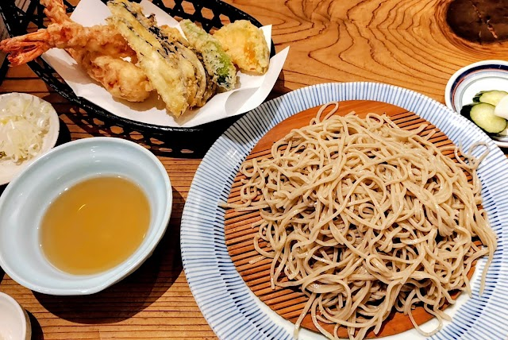
| 営業時間 | 月・火・金 11:30〜14:00, 17:00〜20:30 ／ 土・日 11:30〜20:30 |
|---|---|
| 定休日 | 水・木曜 |
| 住所 | 神奈川県川崎市幸区古市場２丁目１０３ |
| 予約 | 可 — ☎ 044-201-7030 ／ 公式サイト |
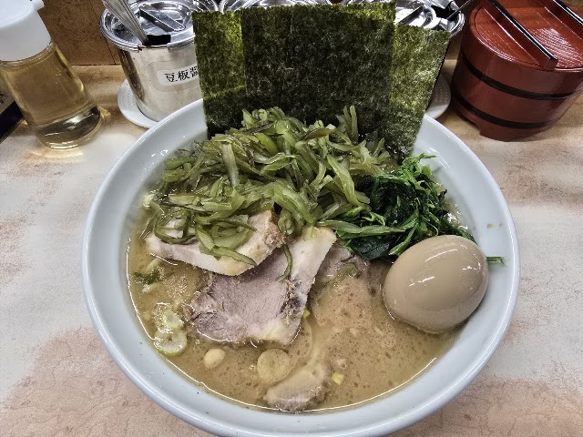
| 営業時間 | 月・火・木・金・土・日 11:00〜21:00 |
|---|---|
| 定休日 | 水曜 |
| 住所 | 神奈川県川崎市川崎区大島上町１７−４ ローゼンハイツ |
| 予約 | 要確認 — ☎ 044-355-5202 |
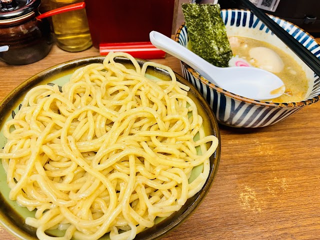
| 営業時間 | 月・火・水・木・金・土・日 11:00〜21:30 |
|---|---|
| 定休日 | なし(要最終確認) |
| 住所 | 神奈川県川崎市川崎区小川町９−７ |
| 予約 | 要確認 — ☎ 044-246-0076 ／ 公式サイト |
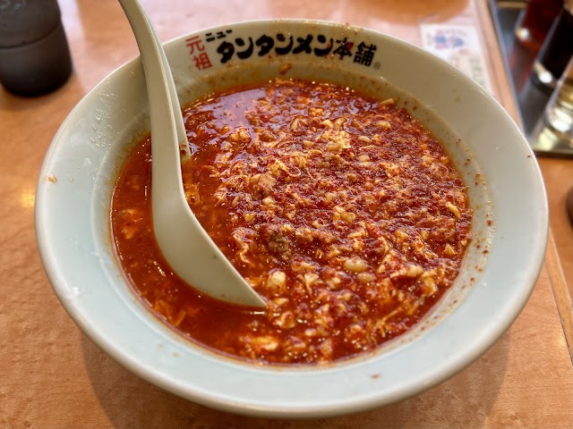
| 営業時間 | 月・火・水・木・金・土・日 11:00〜23:00 |
|---|---|
| 定休日 | なし(要最終確認) |
| 住所 | 神奈川県川崎市川崎区京町１丁目１８−７ |
| 予約 | 要確認 — ☎ 044-366-2180 ／ 公式サイト |
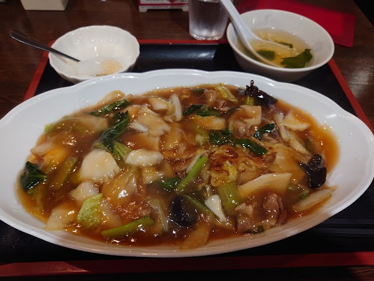
| 営業時間 | 月・火・水・木・金 11:30〜14:00, 17:00〜22:00 ／ 土 11:30〜14:00, 17:00〜21:30 |
|---|---|
| 定休日 | 日曜 |
| 住所 | 神奈川県川崎市幸区大宮町５−５ |
| 予約 | 可 — ☎ 044-555-1010 ／ 公式サイト |
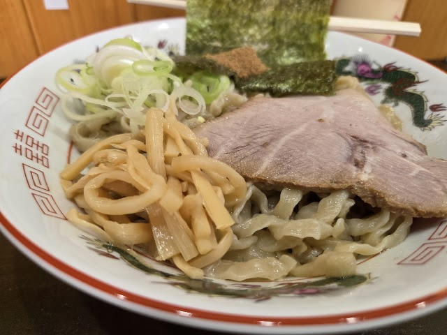
| 営業時間 | 水・木・金・土・日 11:00〜14:30, 17:00〜20:00 |
|---|---|
| 定休日 | 月・火曜 |
| 住所 | 神奈川県川崎市幸区鹿島田１丁目１０−１０ |
| 予約 | 要確認 — 公式サイト |
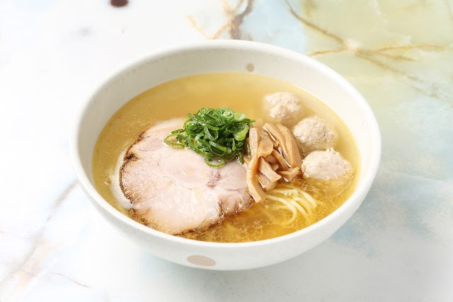
| 営業時間 | 月・火・水 11:00〜14:50, 17:00〜21:50 ／ 金 11:00〜14:50, 17:00〜22:50 ／ 土 11:00〜22:50 ／ 日 11:00〜21:50 |
|---|---|
| 定休日 | 木曜 |
| 住所 | 神奈川県川崎市中原区小杉町３丁目６６ |
| 予約 | 要確認 — ☎ 044-722-2827 ／ 公式サイト |
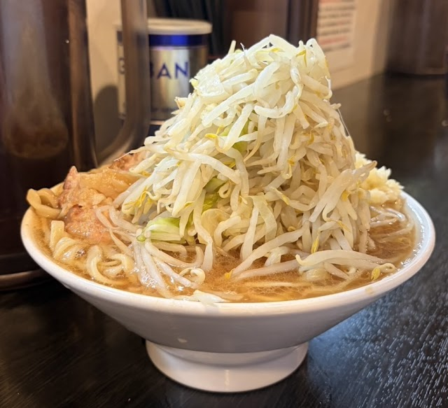
| 営業時間 | 月・火 11:00〜0:00 ／ 水・木・金・土・日 9:00〜0:00 |
|---|---|
| 定休日 | なし(要最終確認) |
| 住所 | 神奈川県川崎市中原区木月４丁目５−２０ シティコート田辺 １０２ |
| 予約 | 要確認 — 公式サイト |
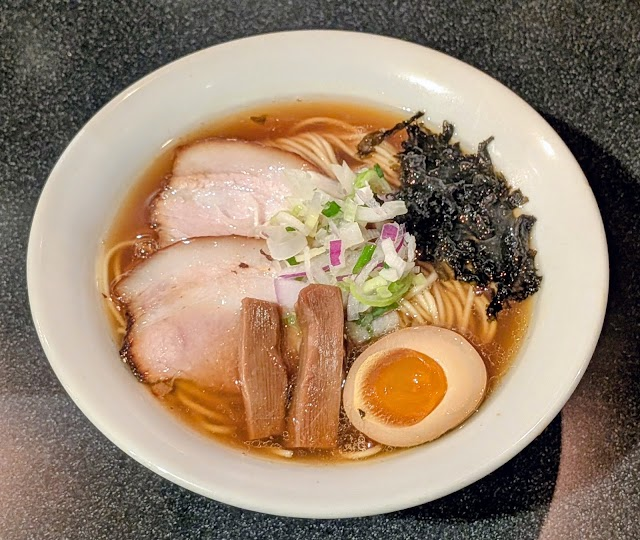
| 営業時間 | 火・水・木・金 11:30〜14:45, 18:00〜20:45 ／ 土 11:00〜14:45, 18:00〜20:45 |
|---|---|
| 定休日 | 月・日曜 |
| 住所 | 神奈川県川崎市高津区末長４丁目２５−３ 鈴木ビル |
| 予約 | 要確認 — 公式サイト |
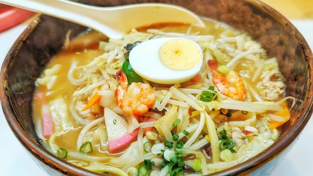
| 営業時間 | 月・水・木・金・土・日 11:30〜15:00, 18:00〜22:00 |
|---|---|
| 定休日 | 火曜 |
| 住所 | 神奈川県川崎市高津区久本１丁目１６−１２ 武蔵野ビル |
| 予約 | 要確認 — ☎ 044-877-0556 |
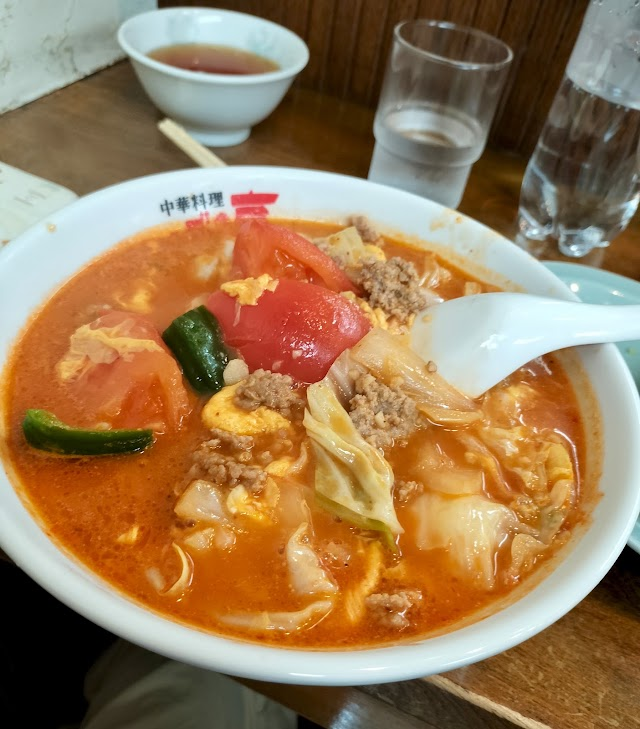
| 営業時間 | 火・水・木・金・土・日 11:30〜14:30, 17:00〜20:30 |
|---|---|
| 定休日 | 月曜 |
| 住所 | 神奈川県川崎市宮前区宮崎２丁目６−１１ バーズビレッジ 1F |
| 予約 | 要確認 — ☎ 044-854-4288 ／ 公式サイト |
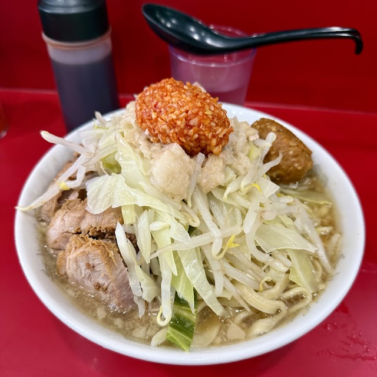
| 営業時間 | 月・火・木・金・土・日 11:00〜15:00, 18:00〜21:00 |
|---|---|
| 定休日 | 水曜 |
| 住所 | 神奈川県川崎市多摩区生田８丁目１−１５ スワンハイツ |
| 予約 | 要確認 — 公式サイト |
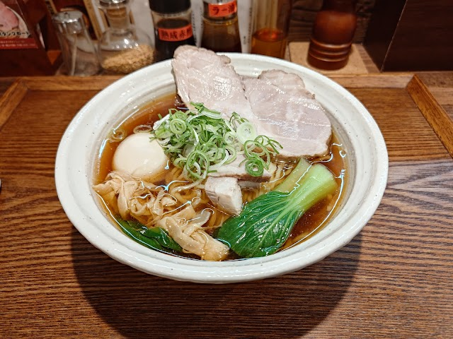
| 営業時間 | 火・水・木・金・土・日 11:00〜15:00 |
|---|---|
| 定休日 | 月曜 |
| 住所 | １丁目-２３-4 百合丘 麻生区 川崎市 神奈川県 215-0011 日本 |
| 予約 | 要確認 — 公式サイト |
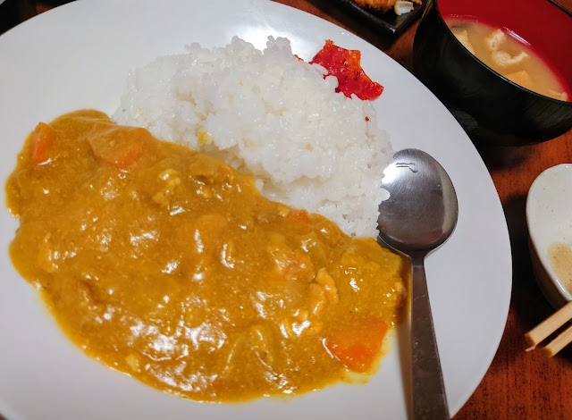
| 営業時間 | 月・火・水・木・金・日 10:00〜21:00 |
|---|---|
| 定休日 | 土曜 |
| 住所 | 神奈川県川崎市川崎区駅前本町１４−５ |
| 予約 | 可 — ☎ 044-222-7024 |
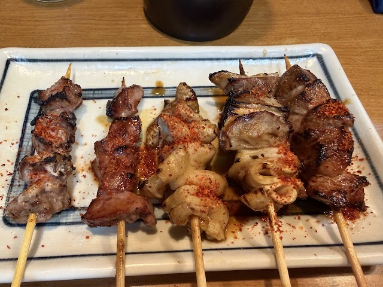
| 営業時間 | 火・水・木・金・土 15:00〜20:00 |
|---|---|
| 定休日 | 月・日曜 |
| 住所 | 神奈川県川崎市川崎区境町１１−３ 島田商店 |
| 予約 | 要確認 — ☎ 044-233-6998 |
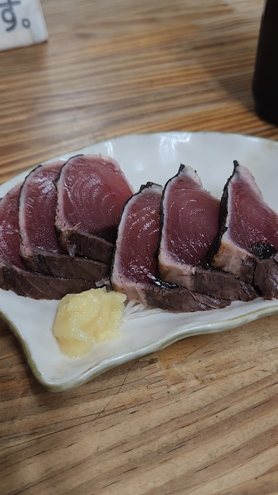
| 営業時間 | 月・火・水・木・金・土 17:00〜0:00 |
|---|---|
| 定休日 | 日曜 |
| 住所 | 神奈川県川崎市幸区鹿島田１丁目９−５ |
| 予約 | 要確認 — ☎ 044-556-5548 |
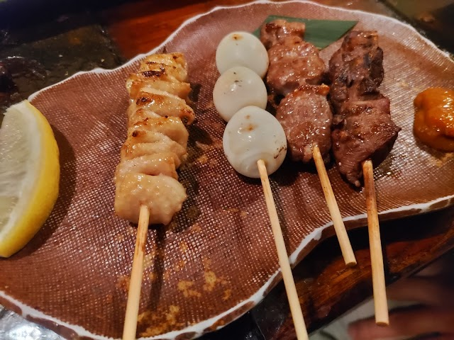
| 営業時間 | 火・水・木・日 17:00〜0:00 ／ 金・土 17:00〜2:00 |
|---|---|
| 定休日 | 月曜 |
| 住所 | 神奈川県川崎市幸区下平間１１１ |
| 予約 | 可 — ☎ 050-5484-9458 ／ 公式サイト |
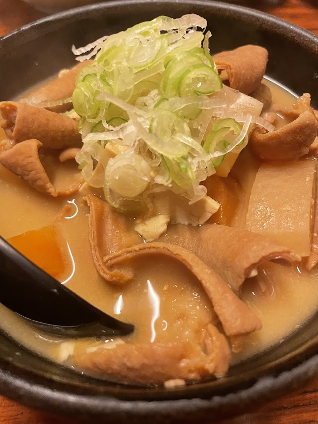
| 営業時間 | 月・火・水・木・金・土 10:00〜22:45 ／ 日 14:30〜21:45 |
|---|---|
| 定休日 | なし(要最終確認) |
| 住所 | 神奈川県川崎市中原区小杉町３丁目４３１ |
| 予約 | 可 — ☎ 044-711-8670 |
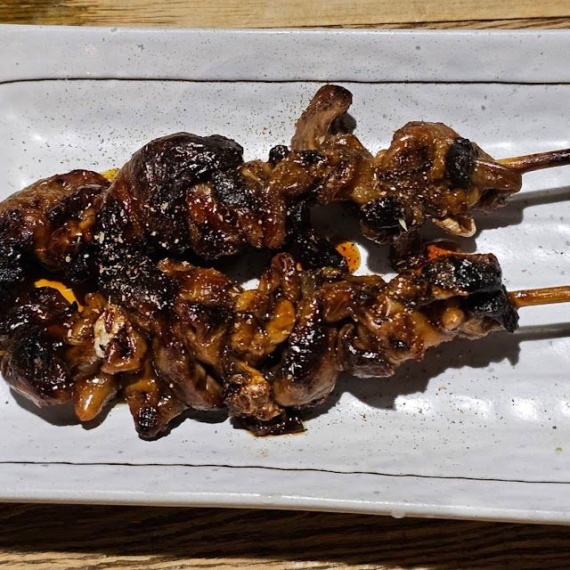
| 営業時間 | 月・火・水・木・金・土・日 17:00〜2:00 |
|---|---|
| 定休日 | なし(要最終確認) |
| 住所 | 神奈川県川崎市中原区小杉町３丁目４３２ 番地 MORIビル ３階 |
| 予約 | 可 — ☎ 044-722-9113 ／ 公式サイト |
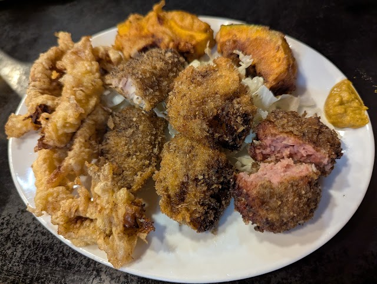
| 営業時間 | 月・火・水・木・金 17:00〜21:00 |
|---|---|
| 定休日 | 土・日曜 |
| 住所 | 神奈川県川崎市中原区木月１丁目３２−６ |
| 予約 | 可 — ☎ 044-411-5439 ／ 公式サイト |
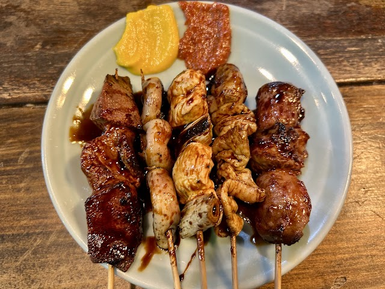
| 営業時間 | 月・火・水・木・金・土 16:00〜22:30 |
|---|---|
| 定休日 | 日曜 |
| 住所 | 神奈川県川崎市高津区溝口２丁目７−１３ |
| 予約 | 要確認 — ☎ 044-822-8802 ／ 公式サイト |
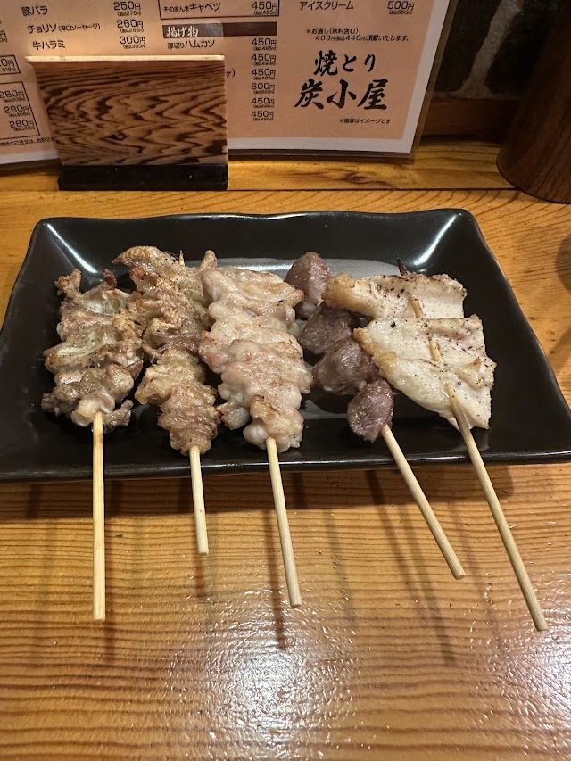
| 営業時間 | 月・火・水・木・金・土 17:00〜23:00 |
|---|---|
| 定休日 | 日曜 |
| 住所 | 神奈川県川崎市宮前区鷺沼３丁目１−３１ ニューフェロー |
| 予約 | 可 — ☎ 044-855-8006 ／ 公式サイト |
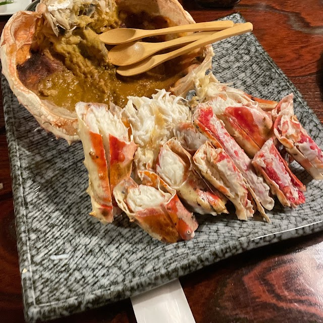
| 営業時間 | 火・水・木・金・土・日 17:00〜23:00 |
|---|---|
| 定休日 | 月曜 |
| 住所 | 神奈川県川崎市多摩区登戸３１８７ スイートネストヒロシマ |
| 予約 | 可 — ☎ 044-933-3919 |
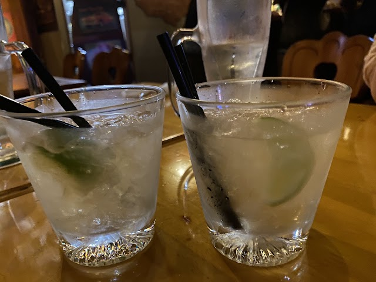
| 営業時間 | 月・火・水・木・金・土 19:00〜2:00 |
|---|---|
| 定休日 | 日曜 |
| 住所 | 神奈川県川崎市麻生区万福寺１丁目１２−３ |
| 予約 | 要確認 — ☎ 044-952-4250 ／ 公式サイト |
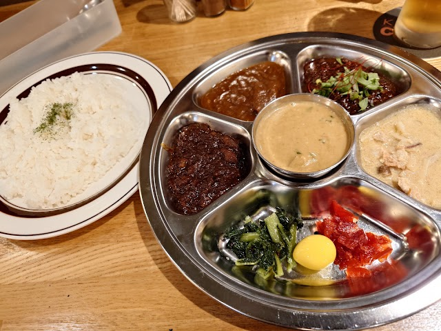
| 営業時間 | 火・水・木・金 11:30〜14:00, 17:30〜20:30 ／ 土・日 11:30〜14:30, 17:30〜20:30 |
|---|---|
| 定休日 | 月曜 |
| 住所 | 神奈川県川崎市中原区新丸子東２丁目８９７番地１１ １０２号室 |
| 予約 | 可 — ☎ 044-571-7186 ／ 公式サイト |
| 営業時間 | 月 11:30〜15:00 ／ 水・木・日 11:30〜15:00, 17:00〜21:00 ／ 金・土 11:30〜15:00, 17:00〜21:30 |
|---|---|
| 定休日 | 火曜 |
| 住所 | 神奈川県川崎市中原区木月１丁目２８−１６ |
| 予約 | 可 — ☎ 044-434-6999 ／ 公式サイト |
| 営業時間 | 火・水・木・金・土・日 11:30〜16:00, 18:00〜22:00 |
|---|---|
| 定休日 | 月曜 |
| 住所 | 神奈川県川崎市中原区新丸子東１丁目 ８３０番地 |
| 予約 | 可 — ☎ 044-433-8902 ／ 公式サイト |
| 営業時間 | 月・水・木・金・土・日 11:30〜22:00 |
|---|---|
| 定休日 | 火曜 |
| 住所 | 神奈川県川崎市幸区中幸町３丁目32−４ アネックス・プラザ 川崎 １F |
| 予約 | 可 — ☎ 044-541-4572 ／ 公式サイト |
| 営業時間 | 月・火・水・木・金・土・日 11:00〜22:30 |
|---|---|
| 定休日 | なし(要最終確認) |
| 住所 | 神奈川県川崎市川崎区駅前本町２６−２ |
| 予約 | 要確認 — ☎ 044-222-1210 ／ 公式サイト |
| 営業時間 | 月・火・水・木・金・土・日 11:00〜15:00, 17:00〜22:00 |
|---|---|
| 定休日 | なし(要最終確認) |
| 住所 | 神奈川県川崎市川崎区小川町4−１ ラチッタデッラ マッジョーレ 1F |
| 予約 | 可 — ☎ 044-201-1910 ／ 公式サイト |
| 営業時間 | 火・水・土 12:00〜14:00, 18:00〜22:00 ／ 金・日 12:00〜14:30, 18:00〜22:30 |
|---|---|
| 定休日 | 月・木曜 |
| 住所 | 神奈川県川崎市高津区下作延２丁目５−４１ |
| 予約 | 可 — ☎ 044-857-1158 ／ 公式サイト |
| 営業時間 | 月・火・水・木・金 11:30〜14:00, 17:30〜22:30 ／ 土・日 11:30〜22:00 |
|---|---|
| 定休日 | なし(要最終確認) |
| 住所 | 神奈川県川崎市高津区溝口２丁目１３−２８ ファイブ溝ノ口ビル 溝ノ口 2階 |
| 予約 | 可 — ☎ 080-8131-9404 ／ 公式サイト |
| 営業時間 | 火・水・木・金・土 11:30〜14:00, 18:00〜21:30 |
|---|---|
| 定休日 | 月・日曜 |
| 住所 | 神奈川県川崎市高津区坂戸１丁目１０−１０ ロビンハイツ 102号室 |
| 予約 | 可 — ☎ 044-571-8135 ／ 公式サイト |
| 営業時間 | 月・火・木・日 17:00〜21:00 ／ 金・土 17:00〜21:30 |
|---|---|
| 定休日 | 水曜 |
| 住所 | 神奈川県川崎市宮前区宮崎６丁目８−２２ |
| 予約 | 可 — ☎ 044-865-2580 ／ 公式サイト |
| 営業時間 | 火・水・木・金・土・日 11:30〜14:30, 18:00〜21:00 |
|---|---|
| 定休日 | 月曜 |
| 住所 | 神奈川県川崎市多摩区登戸２１４８−１ サルートン 2F |
| 予約 | 可 — ☎ 044-400-2467 ／ 公式サイト |
| 営業時間 | 月・火・水・木・金 11:00〜22:00 ／ 土・日 11:30〜22:00 |
|---|---|
| 定休日 | なし(要最終確認) |
| 住所 | 神奈川県川崎市麻生区上麻生１丁目２０−１ |
| 予約 | 要確認 — ☎ 042-350-3101 ／ 公式サイト |
| 営業時間 | 月・火・水・金・土・日 9:00〜20:00 ／ 木 9:00〜13:00 |
|---|---|
| 定休日 | なし(要最終確認) |
| 住所 | 神奈川県川崎市幸区南幸町２丁目１ |
| 予約 | 要確認 — ☎ 044-555-5960 ／ 公式サイト |
| 営業時間 | 月・火・水・木・金・土・日 10:00〜17:00 |
|---|---|
| 定休日 | なし(要最終確認) |
| 住所 | 神奈川県川崎市中原区新丸子東１丁目 広田荘 |
| 予約 | 要確認 — ☎ 044-422-3570 |
| 営業時間 | 月・火・水・木 8:00〜14:00 ／ 金 8:00〜16:00 ／ 土 8:00〜15:00 |
|---|---|
| 定休日 | 日曜 |
| 住所 | 神奈川県川崎市川崎区南町１６−７ |
| 予約 | 要確認 — ☎ 044-222-8488 |
| 営業時間 | 月・火・水・木・金・土・日 8:30〜18:00 |
|---|---|
| 定休日 | なし(要最終確認) |
| 住所 | 神奈川県川崎市川崎区大師本町８−１６ |
| 予約 | 要確認 — ☎ 044-266-4668 ／ 公式サイト |
| 営業時間 | 月・火・水・木・金 10:00〜17:00 |
|---|---|
| 定休日 | 土・日曜 |
| 住所 | 神奈川県川崎市川崎区東田町３−１６ |
| 予約 | 要確認 — ☎ 044-233-4658 ／ 公式サイト |
| 営業時間 | 月・火・水・木・金・土・日 11:00〜18:00 |
|---|---|
| 定休日 | なし(要最終確認) |
| 住所 | 神奈川県川崎市高津区溝口３丁目１３−５ ＬＵＮＡ ＰＩＥＮＡ 1F |
| 予約 | 要確認 — ☎ 044-281-4456 |
| 営業時間 | 月・火・木・金 10:00〜19:00 ／ 土・日 10:00〜18:00 |
|---|---|
| 定休日 | 水曜 |
| 住所 | 神奈川県川崎市宮前区有馬５丁目１−１６ |
| 予約 | 要確認 — ☎ 044-863-6855 ／ 公式サイト |
| 営業時間 | 水・木・金・土・日 10:00〜17:00 |
|---|---|
| 定休日 | 月・火曜 |
| 住所 | 神奈川県川崎市麻生区上麻生４丁目１８−１７ |
| 予約 | 要確認 — ☎ 044-966-7511 ／ 公式サイト |
| 営業時間 | 水・木・金・土・日 10:00〜18:00 |
|---|---|
| 定休日 | 月・火曜 |
| 住所 | 神奈川県川崎市麻生区万福寺６丁目７−１３ |
| 予約 | 要確認 — ☎ 044-455-4642 ／ 公式サイト |
| 営業時間 | 水・木・金・土・日 11:00〜18:00 |
|---|---|
| 定休日 | 月・火曜 |
| 住所 | 神奈川県川崎市中原区小杉町２丁目２７６−１ |
| 予約 | 要確認 — ☎ 044-281-3865 ／ 公式サイト |
| 営業時間 | 月・木・金・土・日 10:00〜19:00 |
|---|---|
| 定休日 | 火・水曜 |
| 住所 | 神奈川県川崎市多摩区登戸１８８９ 今野ビル １Ｆ |
| 予約 | 要確認 — ☎ 044-931-6910 ／ 公式サイト |
| 営業時間 | 水・木・金・土・日 7:30〜19:30 |
|---|---|
| 定休日 | 月・火曜 |
| 住所 | 神奈川県川崎市多摩区中野島６丁目２７−２ |
| 予約 | 要確認 — ☎ 044-911-6626 |
本ガイドは個人利用目的で作成。掲載情報は2026年8月時点の調査に基づく。写真出典: Google Maps投稿写真(©各投稿者/Google)。